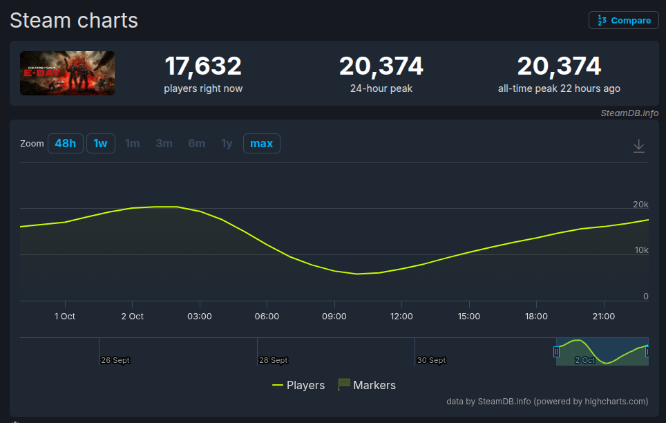

Acesso Antecipado de GoW E-Day bate recorde de jogadores na Steam
Um dos jogos mais aguardados de 2026, Gears of War E-Day está prestes a fazer sua estreia em 6 de outubro no Xbox e PC.
No entanto, o acesso antecipado do jogo já foi liberado e os números revelam um cenário bastante positivo antes de sua estreia oficial.
Acesso antecipado de Gears of War E-Day tem bom desempenho na Steam.
Segundo dados do SteamDB, Gears of War E-Day registrou um pico de 20.374 jogadores simultâneos.
Até o momento de publicação desta matéria, há 17.632 pessoas jogando agora.

Em comparação com outros jogos da franquia, Gears 5, por exemplo, teve metade desse número, com cerca de 10.196 jogadores.
Já Gears of War Reloaded chegou a menos de 5.000.
É claro que os números não estão completos, pois exibem dados de apenas uma plataforma.
De todo modo, isso serve como um termômetro para mostrar o hype dos fãs pelo novo jogo da franquia.
Conforme divulgado em 01/10/2026, Gears of War E-Day chegou com nota 86 no Metacritic.
Assim como você pode conferir em: Metacritic.